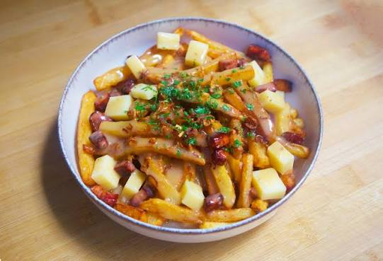
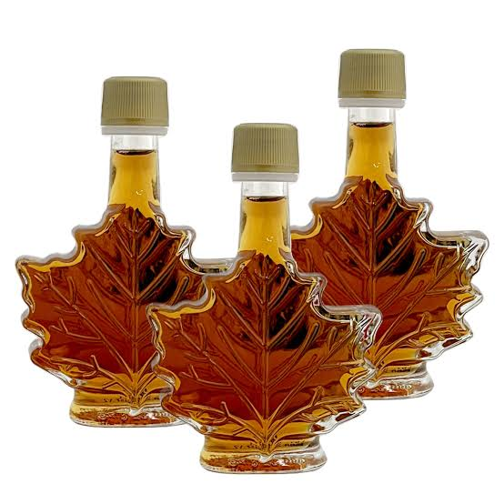

Gastronomía y costo de vida
La gastronomía canadiense es una mezcla de tradiciones indígenas, francesas, británicas y de diferentes comunidades inmigrantes. Sus platillos utilizan ingredientes regionales como papas, pescado, carne, frutas y productos derivados del arce. La cocina cambia de una región a otra y representa la diversidad cultural que caracteriza al país.
Comidas típicas de Canadá
- Poutine: Es uno de los platillos más representativos de Canadá. Se prepara con papas fritas, queso en grano y salsa caliente. Es especialmente popular en Quebec y se encuentra en restaurantes de todo el país.
- Tourtière: Es un pastel de carne tradicional, especialmente relacionado con Quebec. Suele prepararse con carne de cerdo, res o una combinación de diferentes carnes, acompañadas de especias.
- Butter tarts: Son pequeñas tartas dulces preparadas con una mezcla de mantequilla, azúcar y huevo. Algunas versiones incluyen pasas o nueces.
- Jarabe de maple: Se obtiene de la savia de los árboles de arce. Se utiliza para acompañar panqueques, waffles, postres y otros alimentos. Es uno de los productos más reconocidos de Canadá.
- Salmón: Es muy consumido en las regiones costeras, especialmente en la zona del Pacífico. Puede prepararse asado, ahumado o al horno.
Ingredientes utilizados
En la cocina canadiense se utilizan ingredientes como papas, carne, pescado, mariscos, verduras, frutas y productos lácteos. También destaca el uso del jarabe de maple, que se obtiene de los árboles de arce y se emplea en diferentes preparaciones dulces.


Postres y bebidas tradicionales
Además de las butter tarts, existen otros postres populares, como las barras de Nanaimo, originarias de Columbia Británica. Se preparan con capas de galleta, crema y chocolate.
Entre las bebidas se encuentran el café, el chocolate caliente y diferentes bebidas elaboradas con frutas. En las regiones frías, las bebidas calientes son comunes durante el invierno.
Gastronomía de las diferentes regiones
En Quebec se encuentran platillos de influencia francesa, como la tourtière y la poutine. En las provincias del Atlántico destacan los pescados y mariscos, mientras que en la costa del Pacífico son populares el salmón y otros productos del mar.
En las regiones centrales y occidentales también se pueden encontrar carnes, verduras y alimentos de diferentes tradiciones culturales debido a la diversidad de su población.
Moneda oficial
La moneda oficial de Canadá es el dólar canadiense, cuyo código internacional es CAD. Se utiliza para comprar productos, pagar servicios, realizar transacciones comerciales y cubrir los gastos cotidianos. Cada dólar se divide en 100 centavos.
Costo de vida en Canadá
El costo de vida depende de la provincia, la ciudad y las necesidades de cada persona. Entre los gastos más importantes se encuentran la vivienda, la alimentación, el transporte, los servicios y la educación.
Vivienda
La vivienda representa uno de los gastos más importantes para las familias. En ciudades grandes como Toronto y Vancouver, las rentas suelen ser elevadas. En localidades más pequeñas los precios pueden ser diferentes.
Alimentación
Las familias realizan compras en supermercados, mercados y tiendas locales. El gasto en alimentos depende del número de integrantes del hogar, los productos que consumen y el lugar donde viven.
Transporte
En las principales ciudades existen autobuses, trenes y sistemas de metro. Muchas personas utilizan el transporte público para trasladarse a sus escuelas y trabajos. En otras regiones, el automóvil es una opción importante debido a las grandes distancias.
Servicios y educación
Entre los servicios cotidianos se encuentran la electricidad, el agua, internet y la calefacción. La educación también representa un aspecto importante de la economía familiar. Los costos pueden variar según la provincia y el tipo de institución educativa.
Conclusión
La gastronomía canadiense refleja la historia y diversidad de su población. Sus platillos tradicionales, ingredientes regionales y productos como el jarabe de maple forman parte de su identidad. Además, conocer su moneda y costo de vida permite comprender mejor cómo se organizan los gastos y las actividades cotidianas de sus habitantes.